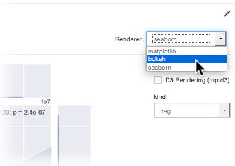
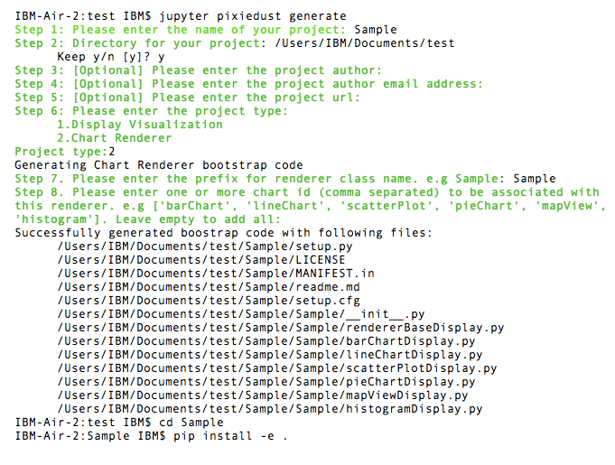
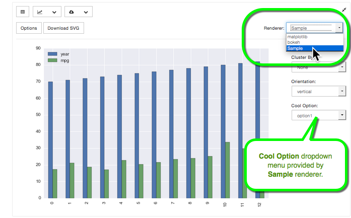

Build a Renderer¶
A rendering engine turns your data into shapes and lines. PixieDust comes with a few built-in renderers like: matplotlib, Seaborn, Bokeh, Mapbox, and Google Maps. To switch between renderers, go to the upper right of your chart and click the Renderer dropdown:
Choices available on this list depends upon what display option you choose. For example, Mapbox and Google Maps are available only for maps.
You can use all these renderers right away without much extra effort. But what if your favorite rendering engine is missing?
Introduction¶
Adding a renderer is similar to adding a display visualization. (Though it’s actually simpler since you don’t have to build the metadata, which is replaced by defining the chartID your renderer is for.) Renderers use the same apis as visualizations, but you need to define a few extra things:
rendererId(must be unique to this renderer) use@PixiedustRendererannotation- specify which charts the renderer can display, like map for example. List using same
@PixiedustRendererannotation - inherit from specialized class
BaseChartDisplay. - (optional) create a set of dynamic options using the
@commonChartOptionsannotation - (optional) as necessary, override method(s) from BaseChartDisplay to control rendering. For example:
getNumFigures,getExtraFields, and so on. - implement
doRenderChartmethod
We’ll soon post detailed instructions on how to implement this all manually, but there’s no need to wait! Read on to learn how to add a sample renderer and start exploring the code.
Add a Renderer¶
Since no documentation is as good the code itself, we created a little tool to help you generate bootstrap project that generates boilerplate code that you can then study to understand how it all fits together.
- In Terminal or other command-line shell, navigate to the directory where you want to create the new project. This can be anywhere you choose.
- Enter and run:
jupyter pixiedust generate
Respond to the questions/prompts to complete setup. Here’s the entire exchange including the command you’ll run in Step 4:
Install your new renderer.
If you’re not already there, cd into your project directory and run the following command:
pip install -e .Go to your notebook, and restart the kernel.
Run the command
import pixiedustRun the command
import Sample(or whatever you named your project)Then load some data and run the display() command on it.
In the charts dropdown, choose a chart you specified that the renderer can display.
Click the Renderer dropdown.
You see your new renderer! Here’s one named Sample:

Explore the code in your new project directory. We’ve commented in some guidance that should help you understand what you’re looking at.
More to come¶
Watch this space for more details on coding your own renderer.